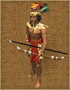
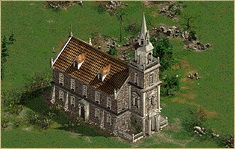
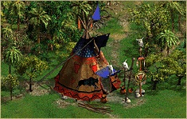

第二章 游戏界面介绍
2.2 单位与建筑介绍

本章简单介绍了游戏中出现的单位与建筑的特点和用法，方便新玩家了解游戏中的单位与建筑。关于特定单位与建筑更详细的属性与参数，参考本站
单位数据百科 板块。
平民单位
农民
农民是建筑与资源的基础，因为农民是唯一能够建造建筑和收集资源的单位。此外，农民也可以通过训练成为军事单位。
殖民国家、玛雅、印加和阿兹特克的农民战斗力都不强，而且会被敌军俘虏。易落魁、特拉华、苏族、休伦和海达这些原住民部落的农民不会被俘虏，而且拥有一定战斗力，并且可以通过升级来提升战斗力；苏族的农民还可以用来打猎。
捕鱼小舟
捕鱼小舟是获取食物的一种很有效的方法。只有美洲原住民国家才拥有这个单位。捕鱼小舟可以在造船厂里生产，捕鱼的时候，也需要造船厂配合。
渡船
无论殖民国家或美洲原住民，都可以在造船厂里建造渡船。渡船可以在水上运输陆军单位，最多可以承载250个单位。渡船的运行速度较慢，但可以通过升级提高速度。
殖民国家军事单位
戟兵
戟兵是西班牙独有的近战攻击兵种。穿着厚重盔甲，携带战戟，混战强度较高，可以抵御弓箭和枪弹的伤害。无论是攻击还是防御，效果都非常好。
长矛兵
长矛兵是出了西班牙以外其他殖民国家都有的军种。穿着厚重盔甲，携带长矛，混战强度较高，可以抵御弓箭和枪弹的伤害。无论是攻击还是防御，效果都非常好。
步兵
步兵是一种装备重型火枪的兵种。因为精准度不高，通常需要步兵群体密集射击。步兵更换弹药的时间较长，因此他们也常备刺刀随时准备与敌人肉搏。
火绳枪兵
火绳枪兵持有轻型火枪，因此威力稍小、射击距离较近，而且射击速度也不快。火绳枪兵开枪比步兵消耗更多资源，但是训练费用低。殖民国家里，俄罗斯没有火绳枪兵。
17C军官
17C军官是强大的近战步兵单位，也是组成17C编队不可缺少的单位。军官还可以与中立部落结盟。17C军官可以组编步兵、火绳枪兵、长矛兵、戟兵的编队。
17C旗手
17C旗手是组成17C编队的必备单位，可以增加士气，不携带武器，不能攻击敌人。
17C鼓手
17C鼓手是组成17C编队的必备单位，可以增加士气，不携带武器，不能攻击敌人。
燧发枪兵
18世纪的先进火枪提高了枪械的金准度和破坏力，让盔甲变的没有作用。燧发枪兵是18世纪殖民国家的核心武力，燧发枪上的刺刀也是强有力的杀伤武器，混战强度高。
燧发枪射出的子弹精准度很高，装弹的速度也很快。通过升级，燧发枪兵几乎无人可敌。当然，燧发枪兵的造价比较贵。
18C军官
18C军官是强大的近战步兵单位，也是组成燧发枪兵编队不可缺少的单位。军官还可以与中立部落结盟。
18C旗手
18C旗手是组成燧发枪兵编队的必备单位，可以增加士气，不携带武器，不能攻击敌人。
18C鼓手
18C鼓手是组成燧发枪兵编队的必备单位，可以增加士气，不携带武器，不能攻击敌人。
猎人
猎人可以通过打猎获取食物，当然他们也可以参与战斗，他们移动速度快、火枪精准度很高，但是训练需要资源较多。只有美国、英国、荷兰可以猎人通过狩猎小屋训练。
海盗
海盗和猎人一样，也可以通过打猎获取食物、参与战斗，他们移动速度快、火枪精准度很高，但是训练需要资源较多。法国可以在住所Ⅰ中直接创建海盗。
民兵
民兵是美国独有的战斗单位，在住宿Ⅱ中创建。民兵持有燧发枪，但是士气较低，而且需要大量黄金维持。
征服者
征服者是西班牙独有的骑兵单位。征服者有厚重的胸甲，可以抵御弓箭和枪弹，但容易受到长矛兵的袭击。他们也装备了手枪和剑。由于装备厚重，因此速度较慢。
哥萨克
哥萨克是俄罗斯独有的骑兵单位，训练时间长，花费大。近战攻击力很强，移动速度非常快。
17C骑兵
17C骑兵是装备锁枪和一把剑的骑手，没有装甲，训练成本高。近战和远程攻击效果都很好，士气较高，但需要较多黄金维持。
17C骑兵军官
17C骑兵军官是17C骑兵编队不可缺少的单位，近战攻击很强。
18C骑兵
18C骑兵装备燧发枪和长剑，训练时间长，而且需要消耗大量物资。射程远，移动速度快，士气高。
18C骑兵军官
18C骑兵军官是18C骑兵编队不可缺少的单位，近战攻击很强。
18C骑兵执旗手
18C骑兵编队不可缺少的单位，混战强度很高。
牧师
牧师虽然没有武器，但是可以治疗受伤的士兵，并且可以和中立部落结盟。牧师的混战强度也比较高，在教堂中创建。
加农炮
加农炮是重型攻击单位，比较不常见，但是威力巨大，发出的炮弹可以攻击建筑物，加农炮也可以发射葡萄弹大面积杀伤敌军单位。但是加农炮的移动速度很缓慢，需要其他部队来保护，而且加农炮开炮需要消耗不少物资。
美洲原住民军事单位
长矛兵
持有长矛的战士，训练花费低。长矛兵不是很勇猛、强大，所以需要大量行动。
弓箭手
持有弓箭的原住民战士。训练速度快，价格便宜。近战较弱，因此可用于远程攻击，射出的弓箭可以点燃建筑物。苏族的弓箭手还可以作为猎人来打猎。


射手
训练速度快，但比较贵。是相当不错的火枪射手，但是近战中较弱。只有普韦布洛、休伦、易落魁、特拉华、海达拥有射手。
投石兵
印加独有的战士，使用印加独特的投石带远程攻击别人。训练速度很快，成本低，但是士气较低，需要多人大规模行动。
吹箭兵
印加独有的兵种，装备一个吹箭，可以远程攻击敌人。训练速度很快，成本低，但是士气较低，需要多人大规模行动。
执棒兵
玛雅独有的兵种，装备一个棍棒和小盾，可以近战攻击。训练速度很快，成本低，但是士气较低，需要多人大规模行动。
投矛兵
阿兹特克独有的兵种，防御较高，可以近战也可以远程攻击攻击。
执斧手
训练时间短，成本低。执斧手攻击范围很近，但是伤害高，也很适合近战。执斧手是易落魁和休伦独有的兵种。
骑兵
易落魁、休伦、特拉华和普韦布洛都有骑兵，训练时间较长，成本也较高。移动速度很快，士气也比较高。
骑兵长矛兵
苏族独有的持有长矛的骑兵，近战攻击强。训练时间较长，成本也较高。移动速度非常快。
骑兵弓箭手
苏族独有的持有弓箭的骑兵，适合远程攻击，射出的箭也可以点燃建。训练时间较长，成本也较高。移动速度非常快。
骑兵射手
苏族独有的持火枪的骑兵，适合远程攻击。训练时间较长，成本也较高。移动速度非常快。
首领
首领训练时间长，费用也较高。是美洲原住民中最强的单位之一，也是编队的必须单位。首领也可以与中立部落结盟。
骑兵首领
苏族独有的骑兵首领训练时间长，费用也较高，是苏族编队的必须单位。骑兵首领也可以与中立部落结盟。
祭司
祭司训练时间长且比较贵。可以治疗受伤的战士，近战攻击强，混战强度也很高。祭司可以与中立部落结盟，也是组成编队的必要单位。
海军单位
小船
小船是殖民国家有的小型海军单位，配有一把火枪。
作战小舟
美洲原住民的水上作战单位。可以用弓箭攻击其他船只，或者陆地上的建筑和单位。
小型帆船
小型帆船以卡拉维尔帆船为原型，是一种小型双炮帆船，可以攻击地面单位和建筑，也可以参与海战。
中型帆船
小型帆船以克拉克帆船为原型，是一种中型双炮帆船，每边两门炮。可以攻击地面单位和建筑，也可以参与海战，炮击速度较快。
护卫舰
护卫舰是拥有两排大炮的大型船只，是最强大的攻击单位。可以攻击地面单位和建筑，也可以参与海战，开火速度较慢，但威力巨大，消耗的物资也比较多。
殖民国家建筑
堡垒
堡垒是殖民国家主要的建筑。把农民送入堡垒可以训练成17C军事单位。堡垒里也可以升级这些兵种的防御和攻击。堡垒也可以作为防御，内部驻军后可以对外开枪和开炮。
磨坊
磨坊的主要用途是生产粮食。磨坊的周边会长出粮食，让农民来收割即可获得食物资源。
住所Ⅰ
住所Ⅰ是用来创建农民的基本建筑，也是一个增加人口上限的重要建筑。
仓库
仓库是用来储存木材的建筑。农民砍伐木材，保存到仓库中。猎人也可以将打猎获得的食物储存到仓库中。
铁匠
铁匠用于有关金属的升级，士兵训练速度增加、粮食产量增加等等。
狩猎小屋
英国和美国拥有狩猎小屋，可以创建猎人。狩猎小屋也可以作为猎人打猎获得猎物的储藏库。
堡垒要塞
堡垒要塞是高级的要塞，重型防御建筑，是欧洲先进技术的体现。在要塞里，可以训练燧发枪兵、骑兵和加农炮。堡垒要塞内部驻军后可以对外开枪和开炮。
矿井
矿井是获取黄金、石头、铁和煤的重要结构，农民进入矿井中，便可开采资源。矿井只能建在相应的矿上。
造船厂
造船厂是生产海军的必备建筑。有了造船厂，才能建立海军单位。造船厂必须建在陆地上靠近水域的位置。
城镇中心
城镇中心是一个殖民地必须的科技建筑。在这里，几乎可以完成所有的升级。


住所Ⅱ
住所Ⅱ和住所Ⅰ一样，是用来创建农民的基本建筑，也是一个增加人口上限的重要建筑。
马厩
马厩是俄罗斯、德意志和葡萄牙独有的建筑。可以用来训练18C骑兵。
碉堡Ⅰ
碉堡Ⅰ是一个单纯的防御建筑，内部驻军后，可以高效的对外开枪。
碉堡Ⅱ
碉堡Ⅱ是一个单纯的防御建筑，内部驻军后，可以高效的对外开枪和开炮。
美洲原住民建筑
堡垒
印加、玛雅和阿兹特克拥有堡垒，可以训练士兵。堡垒要塞内部驻军后可以作为防御对外攻击。印加的堡垒还承担了城镇中心的功能，包含了大部分升级。
农场
农场的主要用途是生产粮食。农场的周边会长出玉米，让农民来收割即可获得食物资源。
仓库
仓库是用来储存木材的建筑。农民砍伐木材，保存到仓库中。猎人也可以将打猎获得的食物储存到仓库中。
兵营
兵营可以训练军队，只有易落魁、休伦、特拉华、海达拥有。也是一个防御形建筑。
城镇
普韦布洛独有的城镇建筑，可以创建农民、训练军队和骑兵。也可以发挥城镇中心的作用，进行一些升级。城镇内部驻军后可以作为防御对外攻击。
马厩
易落魁、休伦、特拉华、苏族拥有马厩，可以训练骑兵。
住所Ⅰ
住所Ⅰ是用来创建农民的基本建筑，也是一个增加人口上限的重要建筑。
住所Ⅱ
住所Ⅱ和住所Ⅰ一样，是用来创建农民的基本建筑，也是一个增加人口上限的重要建筑。
住所Ⅲ
住所Ⅲ和住所Ⅰ、住所Ⅱ一样，是用来创建农民的基本建筑，也是一个增加人口上限的重要建筑。只有玛雅和印加拥有住所Ⅲ。
城镇中心
城镇中心是一个必须的科技建筑。在这里，几乎可以完成所有的升级。


贸易站
易落魁、休伦、特拉华、苏族、海达和普韦布洛拥有贸易站。贸易站可以换取物资，并且产生黄金。
造船厂
造船厂可以训练海军。捕鱼小舟也需要造船厂来储存捕到的鱼。
矿井
矿井是获取黄金、石头、铁和煤的重要结构，农民进入矿井中，便可开采资源。矿井只能建在相应的矿上。在美洲原住民民族中，只有印加、玛雅、阿兹特克和普韦布洛可以建造矿井。
瞭望塔
玛雅独有的瞭望塔可以用来增加视野，也可以用来防御。
图腾
海达独有的图腾，是一个大型的图腾柱。可以增加战士的士气。
塔
塔是一个单纯的防御建筑，内部驻军后，可以对外攻击。只有玛雅、印加、阿兹特克拥有塔。